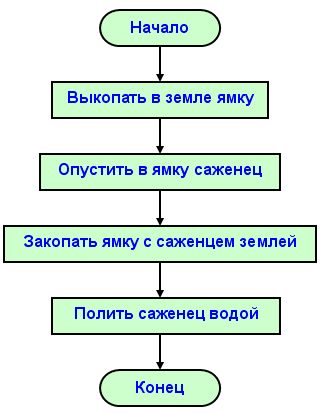

Основы Computer Science
Автор курса - Влад Савило

Структурное программирование
- Знания об операторах ветвлений, сравнения.
- Информация об использовании ветвления в блок-схемах.
- Изучение способов записи и дополнительных конструкций сложного ветвления.
- Обучаемые освоят логические операции, а также потренируются делать программу с разветвлениями.
Знания об операторах ветвлений, сравнения
Опера́тор ветвле́ния (усло́вная инстру́кция, усло́вный опера́тор) — оператор, конструкция языка программирования, обеспечивающая выполнение определённой команды (набора команд) только при условии истинности некоторого логического выражения, либо выполнение одной из нескольких команд (наборов команд) в зависимости от значения некоторого выражения.
Сравнение ( == )
Информация об использовании ветвления в блок-схемах
Блок схема (линейная)
Изучение способов записи и дополнительных конструкций сложного ветвления
if (a > b) {
...
} else if (a < b) {
...
} else {
...
}
if (a > b) {
...
} else {
if (a < b) {
...
} else {
...
}
}
Логические операции
| Оператор | не | и | или | искл. или | эквив. | не эквив. |
| JS | ! | && | || | == (===) | != (!==) | |
| Python | not | and | or | xor | = | <> |
| C++ | ! | && | || | ^ | == | != |
| Java | ! | && | || | ^ | == | != |
И / Конъюнкция
| a | b | a && b |
|---|---|---|
| 0 | 0 | 0 |
| 0 | 1 | 0 |
| 1 | 0 | 0 |
| 1 | 1 | 1 |
ИЛИ / Дизъюнкция
| a | b | a && b |
|---|---|---|
| 0 | 0 | 0 |
| 0 | 1 | 1 |
| 1 | 0 | 1 |
| 1 | 1 | 1 |
Исключающее "или" / Сложение по модулю 2
| a | b | a && b |
|---|---|---|
| 0 | 0 | 0 |
| 0 | 1 | 1 |
| 1 | 0 | 1 |
| 1 | 1 | 0 |